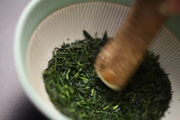

Čajevi
Vrste Čaja
Postoji 6 vrsti čaja od čajevca: Zeleni, Crni, Bijeli, Žuti, Oolong i Pu-Erh čaj. Od čajeva koji ne dolaze od čajevca postoji Mate, Rooibos, Biljni i Voćni čaj.
Čaj je zimzelena biljka latinskog imena Camellia sinensis. Danas je ta biljka kultivirana u cijelom svijetu, a posebno se uzgaja u tropskim i sutropskim područjima. To je zimzelena grmolika biljka, visine do dva metra, bez mirisa sa krutim, zašiljenim, kožastim, sjajnim, eliptičnim listovima, nazubljenim po rubovima. Cvijet je bijeli i mirišljav. Grmovi se sade u velikim čajnim vrtovima na visinama 100-200 m nadmorske visine. Grm se reže na visinu od jednog metra radi većeg broja izdanaka i lakšeg branja lišća. Čajeve možemo podijeliti u šest vrsti. Razlike između njih nastaju u samom procesu obrade.
ZELENI ČAJ

Zeleni čaj obrađuje se samo parom da se ne unište enzimi, a potom se suši na zraku. Obzirom da takvim procesom ne dolazi do fermentacije i oksidacije, zadržava svoju zelenu boju i sve dragocjene sastojke. Zeleni čaj čisti tijelo od otrova, smanjuje bolove, povisuje mentalnu i tjelesnu aktivnost. U sebi sadrži vitamine A1,B2,B12,C i E, mnoge minerale i elemente u tragovima. Prema najnovijim istraživanjima, zeleni čaj sadrži EGCG (EpiGalloCatehin Gallate) koji smanjuje stanice raka, što ga čini uspješnim u borbi protiv raka i Hepatitisa.
BIJELI ČAJ
Bijeli čaj je u tradicionalnoj kineskoj medicini poznat kao eliksir ljepote i dugovječnosti. Naziv bijeli čaj dolazi od tankih srebrnskasto-bijelih dlačica koje se nalaze na neotvorenim pupoljcima na biljci čaja. Bijeli čaj sadrži visoku razinu katehina koji je zaslužan za smanjenje karcinogena, smanjenje mogučnosti dobivanja infarkta, dijabetesa, bolesti srca te pomaže u očuvanju kože od štetnih utjecaja UV zraka.
CRNI ČAJ
Crni čaj je najpoznatija i najraširenija vrsta čaja. Japanci vjeruju da pijenje crnog čaja bogatog antioksidansima i flavonoidima povećava rastezljivost krvnih žila, što dovodi do boljeg protoka krvi. Crni je čaj inače jačeg okusa i sadrži više kofeina nego ostali čajevi. Za razliku od zelenog čaja, koji jačinu okusa gubi nakon godine dana, crni čaj svojstva zadržava čak i nekoliko godina. Iako je zbog svojih ljekovitih svojstava zeleni čaj postao jako poznat, crni čaj je i dalje broj 1 u prodaji na zapadu.
ŽUTI ČAJ
Žuti čaj sadrži dijetni enzim koji pomaže bržoj probavi hrane i sagorijevanju suvišne masnoće u tijelu. On je najbolji prirodni pripravak za gubljenje težine, čisti tijelo od otrova, smanjuje bolove kod problema sa želucem i crijevima, smanjuje masnoću u krvi, dobar je za srce i tlak, sprječava aterosklerozu, dobar je protiv upala, normalizira rad štitnjače, pospješuje krvotok i regeneraciju kože, povisuje mentalnu i tjelesnu aktivnost, djeluje protiv depresije, pospješuje ozdravljenje jetrenih bolesnika, dobar je za reumu, a zbog fluora kojeg sadrži sprječava karijes.
Žuti čaj sadrži vitamine B2, B12, C, E i A1 te minerale u tragovima. Komparirajući ga sa žutim čajem iz vrećice je bespredmetno, jer je ipak ovdje riječ o čaju prve klase u rinfuzi (bulk), a u filter vrećici je čaj treće klase (tea dust).